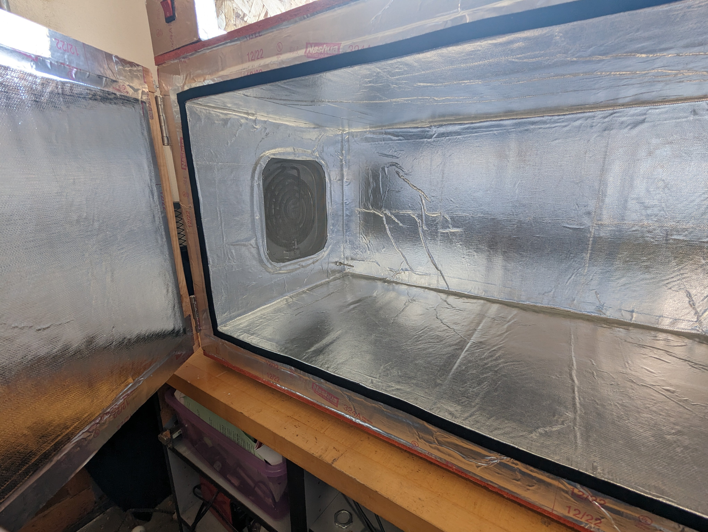
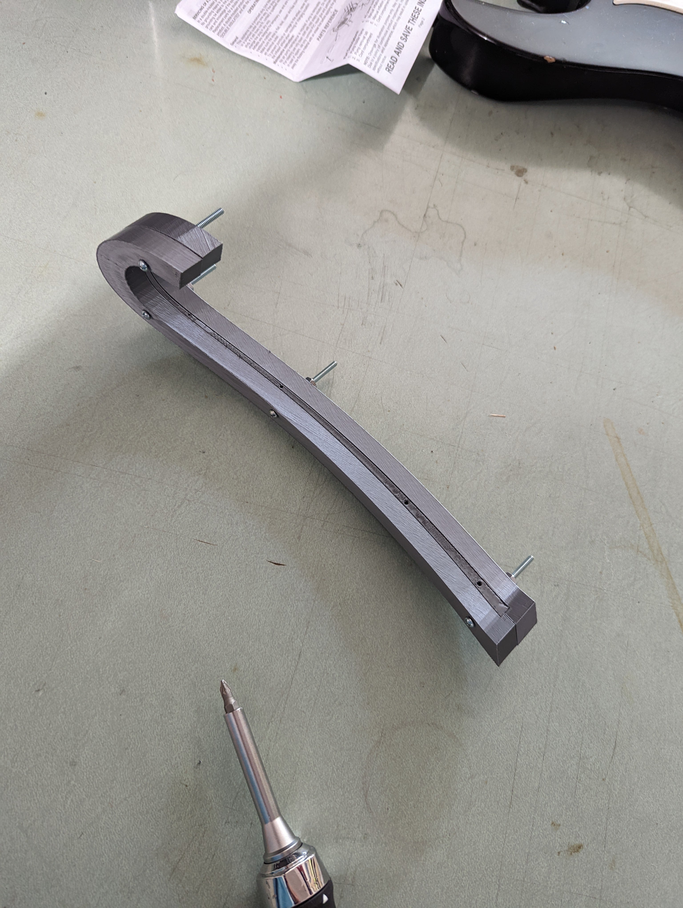
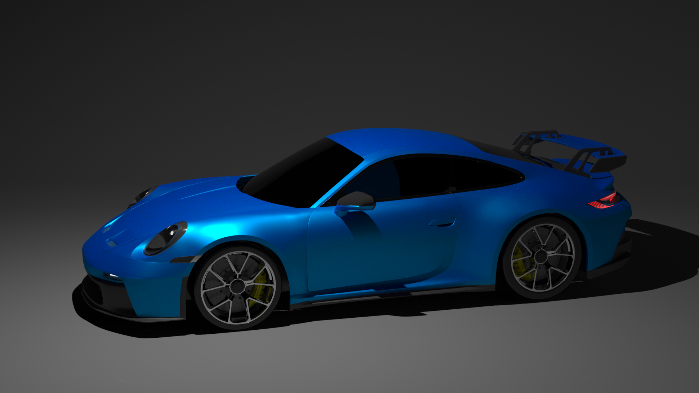
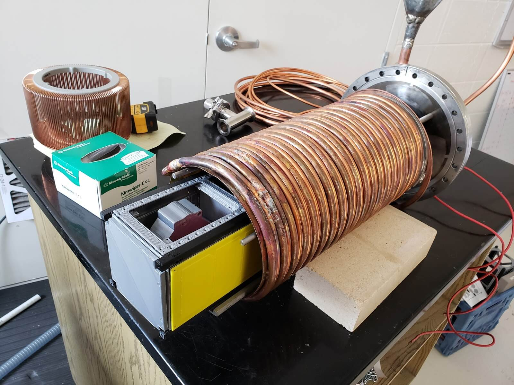
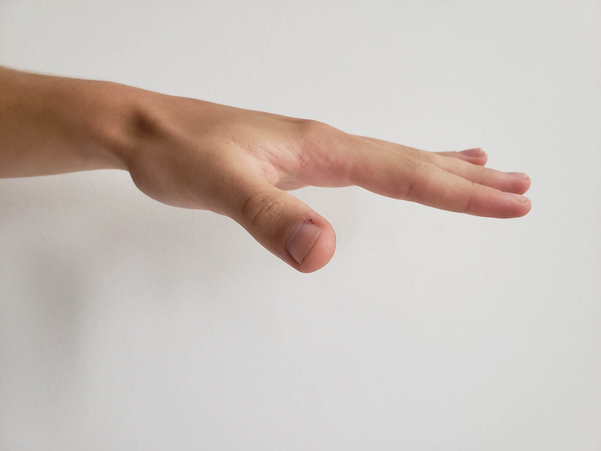
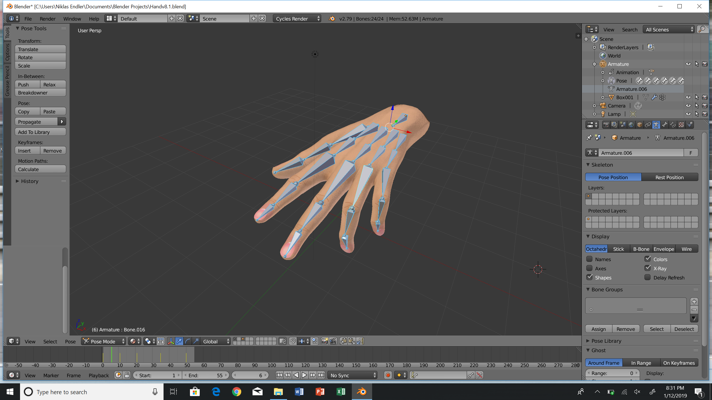
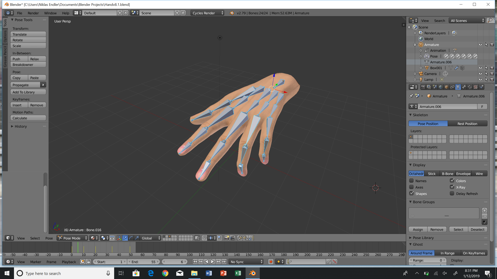
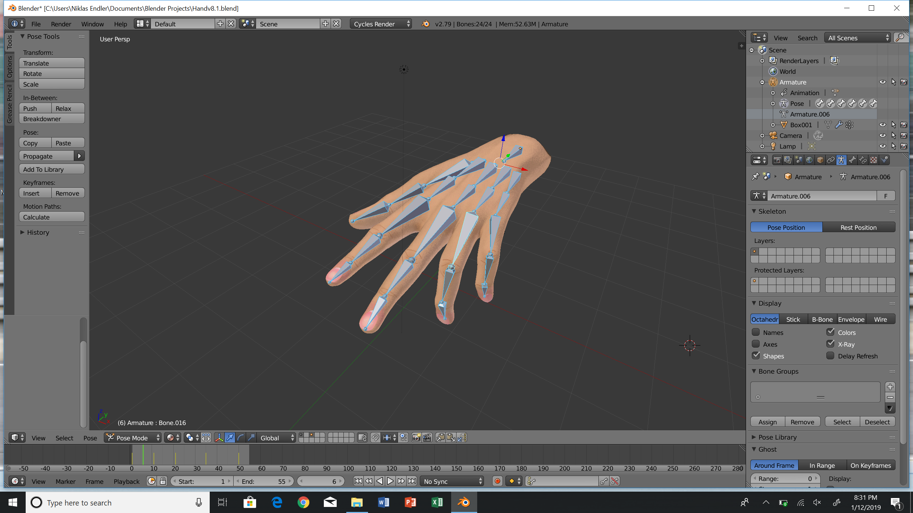

Hello I'm Niklas, a Mechanical Engineer working at Quantum Space as thermal lead. Previously I worked at NASA Ames Research Center. I was part of the Advanced Development Group (ADP), working on a spacecraft called PACE-2. In addition to being the thermal lead for the mission, I heavily supported the mechanical design and testing of the satellite.
Before I started at NASA, I got my Masters with a focus in Mechanical Engineering from the University of Georgia. While completing my Master's at the University, I was heavily involved with the UGA Small Satellite Research Laboratory (SSRL). At the time of joining the team, the SSRL was building UGA's first two satellites (SPOC & MOCI) to launch into LEO - the first one (SPOC) launched on October 3rd, 2020. As "CAD Specialist" on the Mechanical Team in the SSRL, I have worked on both satellites, designed ground support equipment and developed instruments for our vacuum chamber. Since my first semester, I have also been part of the UGA Society of Automotive Engineers (SAE). The SAE team took part in the Lincoln Formula SAE Competion in 2019.
Modeling and Simulation of Self-Synchronizing Mechanical Systems
March 2019 - Now
For my Master's Thesis I was conducting research with the help of the UGA Dynamic Devices and Solutions Lab. If certain conditions are met, mechanical structures can exhibit the remarkable ability to self-synchronize. My thesis implements numerical models of such structures with the goal of understanding conditions that conduce synchronization.
A simple mechanical system exemplifying out-of-phase synchronizaion is shown above, also known as the Huygens' Clocks model. Even though the focus of my Thesis are mostly structural and mechanical oscillators, the same principles are heavily present in fields of physics, acoustics, and electronics. My discoveries extended into a journal paper which is currently pending a publication in the American Journal of Physics.
Projects
Carbon Fiber Gym Bar
June 2023 - Now
I have noticed that some people at the gym struggle to hold onto the lat-pull bars which is why I challenged myself to make a more ergonomic bar. I've prototyped numerous interations of the handle to optimize the hand shape. I then started modeling the bar X-section to maximize the inertia for size and style, hand calcs and FEA confirmed comfortable margins based on carbon fiber properties and loading.
I 3D printed the bar and spray painted on a surface coat which I then sanded and polished to a glozzy finish (bottom left). Next I began making the mold from a high-temp gel coat, supported by fiberglass and high temp resin. It's a 10 pieces mold due to the complex geometry as seen below. I'm waiting on the pre-preg I need to be back in stock before next steps.
Composite Oven
February 2023
I'm trying to get more involved with composites, thus created an oven that would allow me to cure pre-preg carbon fiber at temps of 160C. Buying a curing-oven can be expensive so I decided to make my own.
Above and below you can see some pictures of the project. I built it up in CAD, internal dims = 1250x400x400mm. I disassembled a used air-fryer (top middle photo) for the heating element, fan, and motor. The oven is well insulated featuring 3 different forms of insulation - aluminum teflon film, 1.5" fiberglass insulation, and 1.5" pink insulation. The areas surrounding the heating element are covered in ceraminc fiber (top right photo) to reduce risk of fire. Additional temp sensor built into circuit for safety shutdown. PID and thermocouple for control/feedback (top left photo).

Forged Carbon Fiber Hockey Stick Protector
August 2022

On the weekends I like to play street hockey in San Francisco; however, the stick I purchased is made for ice hockey meaning it wears down quickly when playing on concrete. To fix this issue I decided to make a forged carbon fiber hockey stick protector. I started off by 3D printing the design using references images, to check the fit. Since forged carbon fiber requires a lot of compression, I had to design for the right amount of cavity space that would allow gradual and high stress compression of the composite.
I 3D printed the mold, applied a release agent, and filled the inside with carbon strips and resin. It's important to use the right carbon to resin ratio as otherwise voids can be found in the material. I then put the mold halves and center pieces together and clamped/fastened it shut. Afterwards, I proceeded to sand and apply a final clear coat to the surface. It has held up amaizingly so far!
Porsche 911 GT3 (992) Model
January - May 2022

Since it's release in 2021, I fell in love with the new Porsche 911 GT3 design. As a challenge I decided to fully model and render the car. I first setup my reference frames in 3ds Max based on the car's blueprint as seen in the picture on the bottom left.
I then preoceeded with building the mesh, starting with the main panels and working my way to the smaller details. Creating all the small parts, specifically the lights and wheels, took longer than expected but I'm very happy the result. Next, I created the textures, materials, and lights for each component. Lastly I set up the scence as shown in the picture on the bottom right and added the camera views for final render.
Lincoln Formula SAE
September 2018 - April 2019
Member of design team for Formula Society of Automotive Engineers at UGA. Helped create and design car for Lincoln competition. I was primarily in charge of exhaust routing and the FZ-07 engine mounting. The FSAE competition took part in Nebraska, 2019. The team had to work with specific guidelines and regulations given by the FSAE committee to ensure the safety of the driver while keeping up the car's performance.
Thermal Vacuum Shroud
February 2017 - April 2017
This project was done for and with the Small Satellite Research Labaoratory. A important step in building a satellite is testing it - making sure the satellite can survive the extreme environmental conditions of space. To do so, we replicated this environment (in our case LEO) in accordance to requirements specified by NASA, Nanoracks, and the University Nanosatellite Project (UNP). This included thermal cycling the satellite in both atmospheric and vacuum environments. The first step in creating this test setup was to model our vacuum chamber.
Next we came up with a variety of designs that would both fit the chamber and fulfill the heating requirements, so that we could engage the team on what direction was best. The challenge was creating enough heat to increase the temperature of the satellite through radiation in a 10e-6 torr environment. The framed picture is the final design.
Below is the final manufactured product. Four heating elements are used to radiate heat along the Y-side of the satellite. A thin copper sheet extends across the length to help catch and more uniformly radiated heat. For cooling, liquid nitrogen is pumped through the tubes attached on the outside of the copper cylinder. The image on the left showns the shroud with a 3D-printed model of the satellite partially inside.

Ongoing Project - Watchwinder
April 2022 - Now
A little background: Unlike purely mechancial movements, automatic watches contain a rotor which winds the main spring when worn. If the main spring unwinds, the watch stops and needs to be reset. The watchwinder basically charges the watch when unworn.
The parts will be 3D-printed and coated with leather or suede. It was modeled and toleranced in such a way that all creases from layering the leather disappear and the final product looks clean/seamless. This also meant that fasterners had to remain hidden to give it a smooth and slick look.
The hardware inside has already been tested and consists of an Arduino Nano, Stepper Motor, H-Bridge, two 9V batteries, and a Pin Switch. Right now the motor switches from CW to CCW every hour, depending on the watch movement I will vary the direction of rotation. Note that fasteners and internal hardware are not included in the exploded view above.
Realistic Hand Rig
June 2018 - July 2018
This was a quick project I started and finished Summer 2018. I saw an extremely realistic facial rig on Twitter and wanted to create my own. Hands are said to be extremly hard to design and proportion correctly which is why I chose it as my object. Below is a quick 30-frame animation of the rig in Blender.
To start I took pictures of my own hand from both top and side perspectives. Next, I used photoshop to properly align and scale the referenece images to give them the right aspect rations for the two viewports.

The project required both Blender (right) and Autodesk 3ds Max (left).
Blender: Created multi-layered textures for variation in light penetration to give the hand a more realistic look. I also created the bone frame (vertex assignment/grouping), lighting and final animation with Blender.
3ds Max: Layed out my reference pictures as stated above. Next, I created the vertices and positioned the mesh with respect to the reference images.

Small Side Projects
2016 - Present
Just a few small freetime projects, inclduing SLAM and designs, to add to the collection.
3D Printing ● Laser Cutting ● Hand Milling ● Soldering ● NASA ESD Certified
Coding
MATLAB ● Python ● HTML ● CSS
Interests
Since a young age my passions have fallen in the automotive and space industries and I hope persue a career in the direction of these fields. I'm also a sports fanatic who loves engineering and design. In my freetime I skateboard and do photography, primarily of cars.
CONTACT ME
niklasendler@gmail.com | (770) 778 4109
THANKS for visiting my Website, the best way to reach me is by email or phone for any questions


 
